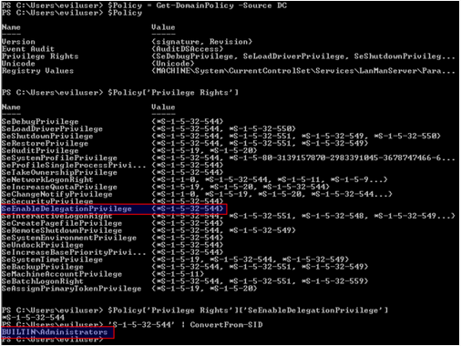

Now the question is: how can we determine which users have this right in the domain? Since SeEnableDelegationPrivilege is applicable only on a domain controller itself, we need to check if any group policy object applied to a domain controller modifies the user right assignments for that given DC. In most cases, this will be the “Default Domain Controllers Policy” (GUID = {6AC1786C-016F-11D2-945F-00C04FB984F9}). This is exactly what the Get-DomainPolicy -Source DC PowerView function will do:

So by default only members of BUILTIN\Administrators (i.e. Domain Admins/Enterprise Admins/etc.) have the right to modify these delegation settings. But what happens if we can edit this GPO, or any other GPO applied to the domain controller?